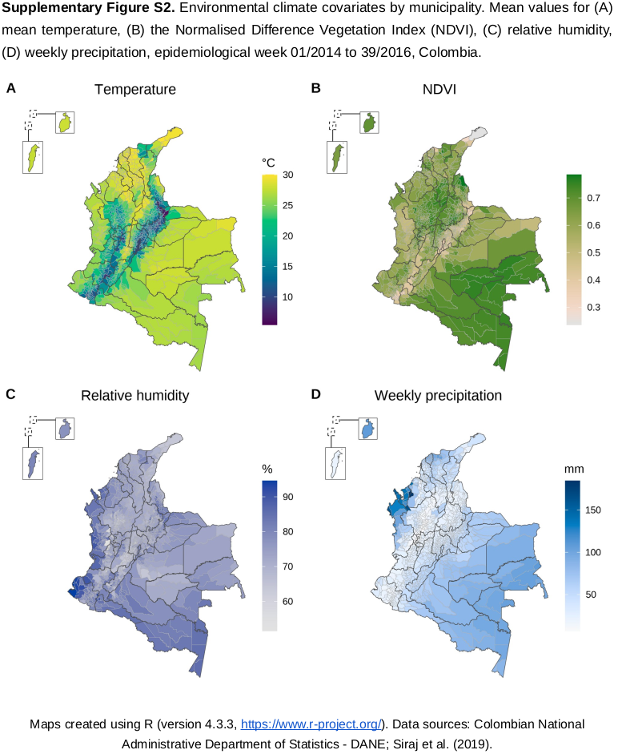
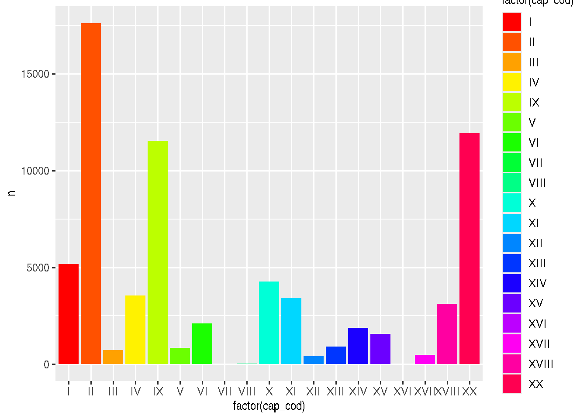
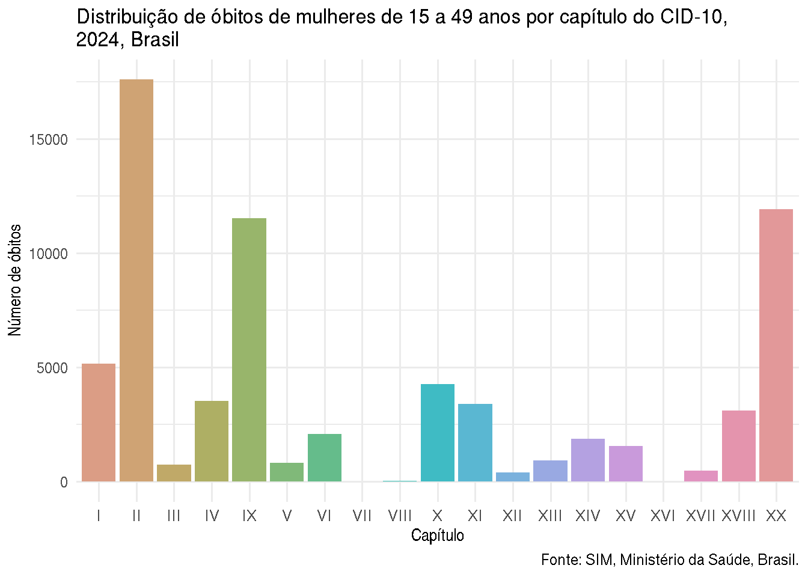
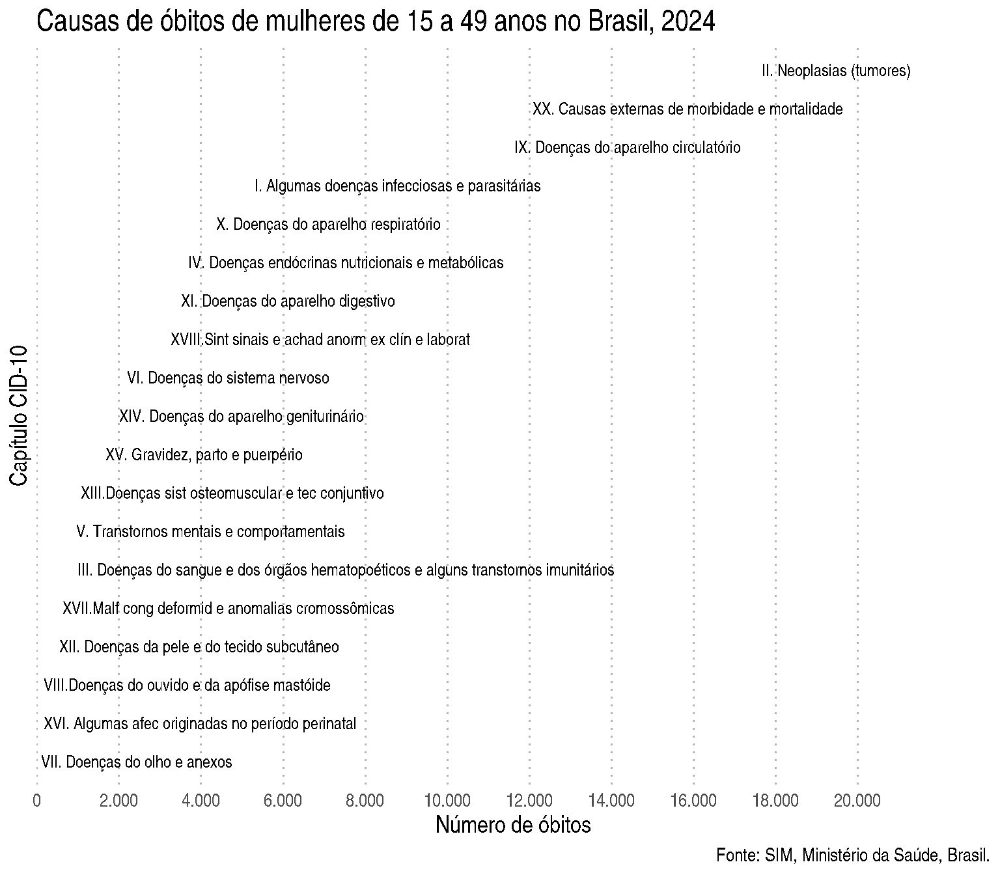
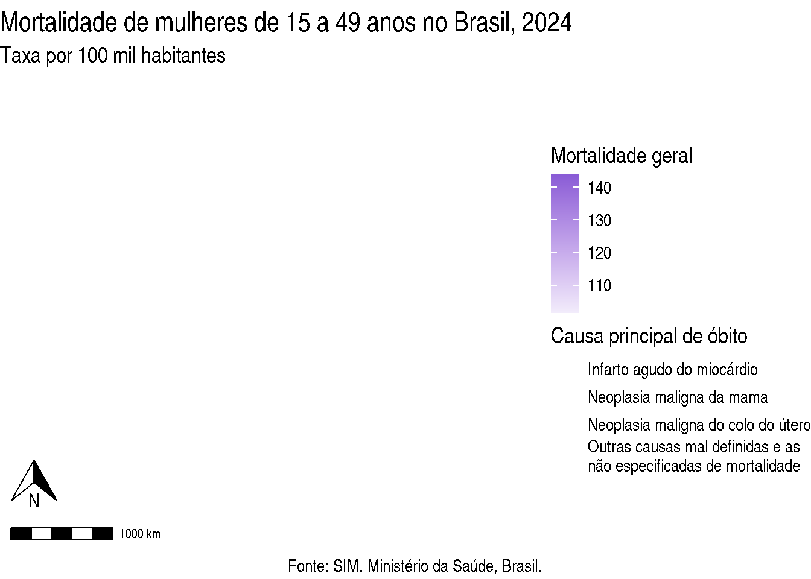
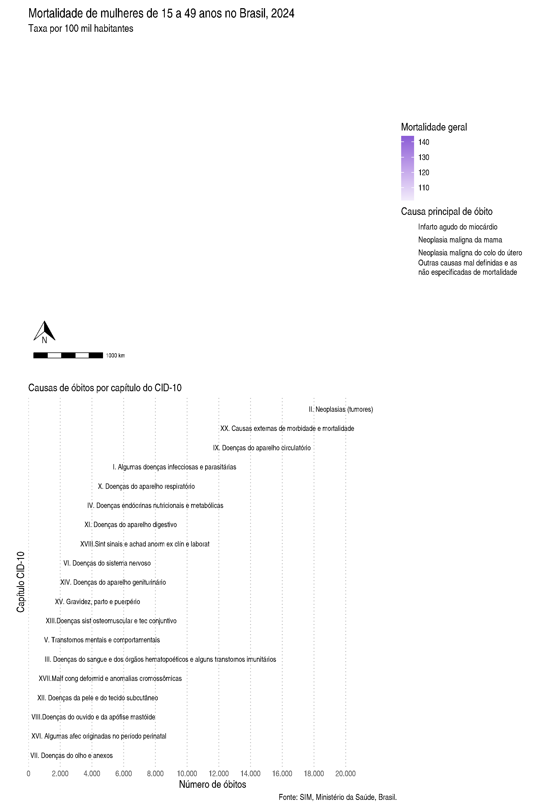

No Curso 1 - Capítulo 5 fomos introduzidos ao ggplot2, conhecendo sua gramática que permite criar gráficos com camadas e os principais tipos de gráficos. Agora, vamos a prender a refinar as visualizações com customizações avançadas.
Em Ciência de Dados, a visualização tem três papéis principais:
1) Explorar dados 2) Comunicar resultados 3) Contar uma história com dados
Mas o que seria um gráfico ruim e um gráfico bom?
Regra dos 5 segundos
Um bom gráfico deve ser compreendido em até 5 segundos. Pergunte-se:
O que está sendo mostrado?
O que devo comparar?
Qual é a mensagem?
Se isso não estiver claro, o gráfico precisa ser melhorado.
2.1 Boas práticas de visualização
1. Clareza acima de tudo
O leitor deve entender o gráfico em poucos segundos! Evite: excesso de informação, títulos vagos, eixos sem unidade, legendas confusas. Sempre inclua título informativo, rótulos, unidade de medida, legenda clara. Se relevante, inclua também a fonte dos dados.
2. Menos é mais: evite elementos visuais desnecessários
Se não transmite informação, remova! Exemplos: fundos coloridos, grades excessivas, cores sem propósito.
3. Use cores a seu favor
Use cores para codificar informação, não apenas decorar! Sempre que possível, use cores adequadas para daltônicos. Evite cores muito saturadas e combinações difíceis de distinguir. Evite usar as mesmas cores/paletas para coisas diferentes!
Algumas cores são instintivamente interpretadas (exemplo: vermelho → calor / alerta / risco, azul → frio / calma / proteção). Usar essas cores de forma contraituitiva, ou seja, invertendo esse significado, atrapalha, e muito, a visualização, podendo inclusive levar a erros de interpretação, mesmo com legenda! A regra geral é alinhar cor com significado natural para que a mensagem seja o mais clara possível.
Veja o exemplo abaixo:

Nesse exemplo:
Foram utilizadas paletas diferentes para cada variável.
Buscou-se alinhar as paletas com a interpretação “instintiva” das cores (tons mais azulados para “frio”, “úmido” e “chuvoso”, terroso para menor cobertura vegetal (valores baixos de NDVI) e verde mais forte para maior cobertura vegetal).
4. Destaque o que é importante
O leitor deve ser capaz de perceber o foco do gráfico rapidamente. Isso pode ser feito ordenando a informação, usando cores para destaque, adicionando anotações, entre outras estratégias.
5. Mantenha a consistência visual
Mantenha a consistência na formatação (tema, tamanho, fontes) e no uso de cores nas figuras. Para gráficos diferentes que representem a mesma coisa, use a mesma cor/paleta. Se precisar de diferentes cores/paletas, busque cores com saturação e luminosidade parecidas, para manter a harmonia! (Dica: Este site é muito útil para encontrar cores harmônicas!)
Veja o exemplo abaixo:
Os quatro mapas estão com o mesmo tamanho, fontes, e tamanho de fontes.
O primeiro mapa apresenta o risco relativo, logo, usa uma paleta de cores divergente, pois valores abaixo de 1 tem uma interpretação, enquanto valores acima de 1 tem outra. Perceba que as categorias foram criadas para respeitar esse ponto de corte.
Já os três mapas abaixo, apesar de serem de doenças diferentes, são todos mapas que representam probabilidade de presença, e por isso estão na mesma paleta de cores. Perceba também que esses três mapas estão na mesma escala numérica!
Repare que para o mapa A, do risco relativo, não foi utilizada a paleta “padrão” Azul-Vermelha. Essa escolha foi para poder usar a paleta com vermelho para os mapas em B. Porém, manteve-se o azul no mapa A no seu sentindo “instintivo”, representando “baixo risco”.
2.2 Exemplo 1: Gráfico de causas de mortalidade entre mulheres em idade fértil
Para exemplificar, vamos trabalhar com dados de causas de óbitos entre mulheres em idade fértil (de 15 a 49 anos) em 2024 no Brasil, obtidas do Sistema de Informações sobre Mortalidade (SIM) através do pacote microdatasus(saiba mais aqui).
Caso queira treinar os seus conhecimentos do curso passado, fique à vontade para pegar os microdados e tratá-los para que fiquem no formato necessário para a visualização que vamos fazer, é um excelente exercício! Pra facilitar, aqui vai uma colinha, e já preparamos uma tabela com os capítulos do CID-10 que precisa juntar com a tabela de casos (lembram do left_join()?).
Tente preparar os dados para ao final ter a seguinte estrutura:
# A tibble: 19 × 4 cap_cod capitulo_cod capitulo_desc n<chr><dbl><chr><dbl>1 I 1 I. Algumas doenças infecciosas e parasitárias 51732 II 2 II. Neoplasias (tumores) 176053 III 3 III. Doenças do sangue e dos órgãos hematopoéticos e alguns transtornos imunitários 7364 IV 4 IV. Doenças endócrinas nutricionais e metabólicas 35375 IX 9 IX. Doenças do aparelho circulatório 11526# ℹ 14 more rows
Quer focar na parte de visualização agora? Tudo bem, vamos pegar os dados já arrumados!
# A tibble: 19 × 4
cap_cod capitulo_cod capitulo_desc n
<chr> <dbl> <chr> <dbl>
1 II 2 II. Neoplasias (tumores) 17605
2 XX 20 XX. Causas externas de morbidade e mortalidade 11938
3 IX 9 IX. Doenças do aparelho circulatório 11526
4 I 1 I. Algumas doenças infecciosas e parasitárias 5173
5 X 10 X. Doenças do aparelho respiratório 4262
6 IV 4 IV. Doenças endócrinas nutricionais e metabólicas 3537
7 XI 11 XI. Doenças do aparelho digestivo 3416
8 XVIII 18 XVIII.Sint sinais e achad anorm ex clín e laborat 3111
9 VI 6 VI. Doenças do sistema nervoso 2096
10 XIV 14 XIV. Doenças do aparelho geniturinário 1886
11 XV 15 XV. Gravidez, parto e puerpério 1574
12 XIII 13 XIII.Doenças sist osteomuscular e tec conjuntivo 920
13 V 5 V. Transtornos mentais e comportamentais 837
14 III 3 III. Doenças do sangue e dos órgãos hematopoético… 736
15 XVII 17 XVII.Malf cong deformid e anomalias cromossômicas 472
16 XII 12 XII. Doenças da pele e do tecido subcutâneo 414
17 VIII 8 VIII.Doenças do ouvido e da apófise mastóide 25
18 XVI 16 XVI. Algumas afec originadas no período perinatal 15
19 VII 7 VII. Doenças do olho e anexos 5
Vamos fazer um gráfico com a distribuição de óbitos das mulheres em idade fértil no Brasil em 2024 por capítulo de CID-10.
Uma tentativa inicial é:
ggplot(dadosCID, aes(x =factor(cap_cod), y = n, fill =factor(cap_cod))) +geom_col() +scale_fill_manual(values =rainbow(19))

Este gráfico é um bom gráfico? Por que?
Vamos tentar melhorar um pouco?
ggplot(dadosCID, aes(x =factor(cap_cod), y = n, fill = capitulo_desc)) +geom_col(show.legend =FALSE) +scale_fill_manual(values =hcl.colors(19, "Dynamic")) +labs(title ="Distribuição de óbitos de mulheres de 15 a 49 anos por capítulo do CID-10, \n2024, Brasil",x ="Capítulo",y ="Número de óbitos",caption ='Fonte: SIM, Ministério da Saúde, Brasil.' ) +theme_minimal()

Visualmente, já ficou muito mais agradável! E agora conseguimos saber do que o gráfico se trata. Repare que personalizamos apenas de forma básica, como já aprendemos no curso anterior. Excluímos a legenda, que era redundante, colocando a opção show.legend = TRUE em geom_col(), escolhemos uma paleta menos saturada, acrescentamos título do gráfico e dos eixos com labs(), e colocamos um tema mais limpo (theme_minimal()). Porém ainda podemos melhorar! Esse gráfico funciona, mas ele comunica claramente? E o que você acha do uso de cores nesse gráfico?
Vamos tentar avançar um pouco mais? Veja o gráfico abaixo:

O que acha desse gráfico? Está mais informativo?
A principal diferença, logo de cara, é que rotacionamos o gráfico, ordenamos pelo capítulo de CID-10 com o maior número de óbitos, e acrescentamos rótulos com a descrição dos capítulos. Essas foram mudanças estruturais do gráfico. Também passamos a usar uma só cor e mudamos um pouco o título. Vamos ver como ficou o código?
g1 <-ggplot(dadosCID, aes(x =reorder(cap_cod, n), y = n)) +geom_col(fill ='#a178df', alpha = .8) +labs(title ="Causas de óbitos de mulheres de 15 a 49 anos no Brasil, 2024.",x ="Capítulo CID-10",y ="Número de óbitos",caption ='Fonte: SIM, Ministério da Saúde, Brasil.' ) +geom_text(aes(label = capitulo_desc),hjust =-0.02,size =3.5 ) +scale_y_continuous(breaks =seq(0, 20000, 2000),labels = scales::label_comma(big.mark =".", decimal.mark =","),expand =expansion(mult =c(0, 0.32))) +theme_minimal() +theme(axis.text.y =element_blank(), text =element_text(size =14),panel.grid.major.y =element_blank(),panel.grid.minor.x =element_blank(),panel.grid.major.x =element_line(linetype ='dotted', colour ='grey70') ) +coord_flip()g1
Vamos por partes! Rotacionamos o gráfico com coord_flip() (no final do código), e ordenamos pelo capítulo de CID-10 com o maior número de óbitos na primeira linha x = reorder(cap_cod, n). As cores não tinham uma função, eram redundantes. Então deixamos de usar fill = na estética (aes()) na primeira linha, e em vez disso, defimimos a cor em geom_col(), com uma leve transparência:
Agora partimos para modificações que são ajustes estéticos que fazem um polimento visual do gráfico. (Experimente fazer o gráfico sem essas modificações para ver como fica!)
Controlamos as quebras do eixo y com breaks e colocamos o . como marcador de milhar com a função label_comma() do pacote scales. O argumento expand = foi utilizado para adicionar espaço extra no eixo x para que os rótulos dos capítulos coubessem dentro do gráfico.
Por fim, modificamos o theme_minimal() com a função theme() excluindo o título do eixo x, aumentando a fonte do gráfico, excluindo elementos de grade que poluíam o gráfico, e deixando apenas linhas pontilhadas em cinza suave para marcar as quebras maiores do eixo x.
Poderíamos ainda destacar as principais causas de mortalidade no gráfico usando uma cor diferente, por exemplo, para as 5 primeiras. Tente fazer isso!
2.2.1 O pacote scales
O pacote scales faz parte do ecossistema do ggplot2 e possui funções para formatar e controlar escalas em gráficos. É muito útil para melhorar a forma como números aparecem nos eixos e rótulos, melhorando a legibilidade das visualizações e reduzindo o esforço necessário para entender valores numéricos. Veja abaixo algumas funções do scales.
Função
Para que serve
Exemplo de resultado
label_number()
Formatação numérica geral e evita notação científica
1e+05 → 100000
label_comma()
Adiciona separador de milhares
10000 → 10,000
label_percent()
Converte proporções em porcentagem
0.25 → 25%
label_dollar()
Formata valores monetários
1500 → $1,500
label_number_si()
Notação compacta (K, M, B)
1000000 → 1M
label_scientific()
Formata números em notação científica
1000000 → 1e+06
breaks_pretty()
Gera intervalos “bonitos” para eixos
0, 5, 10, 15...
breaks_width()
Define intervalos fixos no eixo
0, 2000, 4000...
breaks_log()
Gera intervalos para escalas logarítmicas
1, 10, 100...
Vimos no exemplo 1 o uso da função label_comma() para adicionar o separador de milhar. Em português, utilizamos . para milhar e , para decimal. Podemos especificar dentro da função:
Isso funciona mesmo se o limite superior dos dados mudar, tornando o código mais robusto.
2.3 Exemplo 2: Mapa da mortalidade de mulheres em idade fértil
Vamos voltar aos dados de óbitos de mulheres em idade fértil no Brasil em 2024. Vamos agora fazer um mapa que mostre, ao mesmo tempo por Unidade Federativa (UF):
a mortalidade geral e
a principal causa de mortalidade (categoria do CID-10) deste grupo.
Precisamos também da principal causa de mortalidade em cada UF. Vamos usar um símbolo na UF para identificar a principal causa, então precisamos das coordenadas do centroide da UF:
top_causa <- dadosUF |>filter(posicao ==1)centros <-st_centroid(mapa_uf)centros <- centros |>left_join(top_causa, by =c("abbrev_state"="uf"))
Agora vamos para a nossa figura.
ggplot() +geom_sf(data = mapa_dados, aes(fill = mortalidade), color ="white") +geom_sf(data = centros, aes(shape = DESC_CAT), alpha =0.9) +scale_fill_gradient(low ="#f2ecfb",high ="#8a5cd6" ) +labs(title ="Mortalidade de mulheres de 15 a 49 anos no Brasil, 2024",fill ="Mortalidade geral",shape ="Causa principal",caption ='Fonte: SIM, Ministério da Saúde, Brasil.' ) +theme_void() +theme(text =element_text(size =14))
Repare que mantivemos a consistência de cores, com uma gradiente de cor baseado na cor do gráfico de barras que fizemos anteriormente, e também de tamanho do texto.
Porém a figura tem alguns problemas, certo? Vamos tentar arrumá-los.
Veja que existe uma categoria de causa principal muito longa! Podemos incluir no código uma quebra do texto. Faremos isso acrescentando ao código:
Agora vamos melhorar as legendas. Temos duas legendas, e podemos usar guides() para modificar cada uma separadamente. Primeiro, vamos reordenar as legendas, de forma que a escala de cores para a mortalidade geral apareça primeiro. Veja que o tamanho dos símbolos na legenda é muito pequeno. Com guides() podemos aumentá-los sem aumentar o tamanho dos símbolos no mapa. Para isso, vamos acrescentar ao código o seguinte:
Também é boa prática incluir em mapas a escala e a seta para o Norte. Podemos fazer isso com o pacote ggspatial, acrescentando ao código:
# adiciona a escala do mapa:annotation_scale() +# adiciona a seta para o norte, aumentando o espaço para não ficar em cima da escala, e # diminuindo o tamanhoannotation_north_arrow(which_north ="true",pad_y =unit(1, "cm"),width =unit(1, "cm"),height =unit(1, "cm"))
O código final e a figura ficam assim:
library(ggspatial)gmapa <-ggplot() +geom_sf(data = mapa_dados, aes(fill = mortalidade), color ="white") +geom_sf(data = centros, aes(shape = DESC_CAT), alpha =0.9) +scale_fill_gradient(low ="#f2ecfb",high ="#8a5cd6" ) +scale_shape(labels = \(x) stringr::str_wrap(x, 35)) +labs(title ="Mortalidade de mulheres de 15 a 49 anos no Brasil, 2024",subtitle ="Taxa por 100 mil habitantes",fill ="Mortalidade geral",shape ="Causa principal de óbito",caption ='Fonte: SIM, Ministério da Saúde, Brasil.' ) +theme_void() +theme(text =element_text(size =14)) +guides(fill =guide_colorbar(order =1),shape =guide_legend(override.aes =list(size =4))) +annotation_scale() +annotation_north_arrow(which_north ="true",pad_y =unit(1, "cm"),width =unit(1, "cm"),height =unit(1, "cm"))gmapa

Uma das vantagens do guides() é que podemos controlar a aparência de cada legenda separadamente. Poderíamos, por exemplo, colocar a legenda de fill abaixo do mapa, mantendo a legenda de shape na direita, apenas incluindo position = 'bottom':
guides(fill =guide_colorbar(order =1, position ='bottom'),shape =guide_legend(override.aes =list(size =4)))
2.3.1 Usando guides()
A função guides() do ggplot2 controla como as legendas são representadas no gráfico.
No ggplot2, certas personalizações das legendas podem ser controladas por:
labs()
scale_*()
theme()
guides()
Cada uma tem um papel diferente.
Função
Papel principal
O que pode controlar nas legendas
Exemplos de uso
labs()
Define rótulos e títulos do gráfico
Título da legenda (nome da variável usada em aes())
labs(color = "Grupo", fill = "Categoria")
scale_*()
Controla como os dados são mapeados para estética visual
Cores, formas, tamanhos, ordem das categorias, valores exibidos e também o nome da legenda
Além disso, guides pode ser utilizado para alterar legendas de um gráfico que já está pronto, inclusive incluindo ou excluindo uma legenda.
Vamos alterar a legenda do mapa que fizemos, colocando uma delas para baixo. Podemos usar theme() combinado com guides() para aplicar mudanças apenas à uma legenda:
Existem muitos pacotes que extendem as funções do ggplot2. Vamos ver alguns deles aqui.
2.4.1 Juntando gráficos com patchwork
Dentre os pacotes mais utilizados com o ggplot2 estão aqueles que servem para criar painés de gráficos, destacando-se o patchwork. O patchwork trata os gráficos como objetos que podem ser combinados com operadores matemáticos.
Por exemplo, o operador | coloca gráficos em colunas, enquanto o operador / empilha linhas:
gmapa3 <- gmapa +theme(plot.caption =element_blank())g2 <- g1 +labs(title ='', subtitle ='Causas de óbitos por capítulo do CID-10')library(patchwork)gmapa3 / g2

Os principais usos do patchwork estão resumidos abaixo. Para saber mais, acesse os guias disponíveis aqui.
Uma das funções que criam gráficos estilizados com ggpubr é a ggdotchart. Vamos fazer um gráfico desses. Perceba que podemos modificar esse gráfico da mesma forma que modificamos um criado com ggplot2:
Para saber mais sobre o ggpubr e seus gráficos personalizados, clique aqui.
2.4.3 E muito além…
Existem muitos outros pacotes que vão ser mais ou menos úteis dependendo do tipo de dado que você trabalha. Alguns bastante comuns na Epidemiologia são:
Pacote
Para que serve
Principais funções
ggridges
Criar gráficos de densidade empilhados para comparar distribuições entre grupos
geom_density_ridges(), geom_ridgeline()
ggrepel
Evitar sobreposição de rótulos em gráficos
geom_text_repel(), geom_label_repel()
ggstatsplot
Gerar gráficos com testes estatísticos automáticos integrados
ggbetweenstats(), ggscatterstats(), ggbarstats()
ggcorrplot
Visualizar matrizes de correlação de forma clara
ggcorrplot()
ggwordcloud
Criar nuvens de palavras com layout flexível e controle estético
geom_text_wordcloud(), geom_text_wordcloud_area()
ggnewscale
Permitir múltiplas escalas de cor ou preenchimento no mesmo gráfico
new_scale_color(), new_scale_fill()
Saiba mais sobre eles e outros pacotes suplementares ao ggplot2 em:
A visualização de dados evoluiu significativamente nos últimos anos. Gráficos estáticos, embora úteis, muitas vezes limitam a exploração e a compreensão aprofundada dos dados. É aí que entram os gráficos interativos, que permitem aos usuários manipular e investigar os dados de forma dinâmica, através de zoom, filtros, tooltips, animações e outras funcionalidades.
No contexto do R, a criação de gráficos interativos ganhou popularidade devido à sua capacidade de combinar a robustez da linguagem para análise de dados com a flexibilidade do JavaScript para a criação de interfaces visuais ricas. A integração entre o R e o JavaScript permite que os analistas de dados construam visualizações interativas que não apenas apresentam os resultados da análise, mas também incentivam a exploração e a descoberta.
O R atua como o motor de análise de dados, preparando e transformando os dados para visualização que vai ser feita por uma biblioteca em Javascript. Essas bibliotecas de gráficos interativos permitem a criação de gráficos que podem ser facilmente incorporados em aplicativos web, dashboards em shiny ou relatórios interativos.
Existem diversas bibliotecas JavaScript que podem ser utilizadas em conjunto com o R, as mais populares incluem:
plotly Biblioteca JS com muitos tipo de graficos pode ser usada a partir do ggplot ou de funções especificas. Pode definir estilos CSS e algumas funções em JS.
highcharter Biblioteca JS generica com muitos tipos de graficos e customizações, pode ser usada a partir do ggplot2 ou de funções especificas. Como as anteriores, pode definir estilos CSS e algumas funções em JS.
dygraphs Biblioteca JS orientada a gráficos interativos de series temporais, pode ser usada a partir de funções especificas. Pode tambem definir estilos CSS e algumas funções em JS.
leaflet Biblioteca JS para mapas interativos, pode ser usada a partir de funções especificas para mapas de áreas, pontos, etc…
ggiraph Biblioteca R que permite criar gráficos ggplot2 interativos, adicionando tooltips e ações de clique. É uma opção interessante para quem já está familiarizado com ggplot2 e deseja adicionar interatividade sem sair do ambiente R.
Existem ainda algumas outras bibliotecas poderosas com a d3.js e vega que são mais complexas e exigem um conhecimento mais profundo de JavaScript, mas oferecem uma flexibilidade para criar visualizações personalizadas. Elas podem ser usadas no R através dos pacotes r2d3 e vegawidget, respectivamente.
2.5.1plotly
Gráficos interativos permitem que quem analisa ou lê o resultado “converse” com a visualização, explorando detalhes com zoom, filtros, seleção de grupos e “tooltips” ao passar o cursor sobre os pontos. Eles são especialmente úteis em análises exploratórias, painéis (dashboards), relatórios em HTML e aplicações web (por exemplo, com Shiny), onde o usuário precisa investigar padrões sem gerar novos gráficos manualmente.
Muitas vezes esses resultados são atiggidos utilizando bibliotecas javascript, como plotly, d3.js, highcharter, leaflet, entre outras. No entanto, o R tem pacotes que permitem criar gráficos interativos diretamente a partir de objetos R, sem a necessidade de escrever código em JavaScript. O plotly é um dos mais populares para isso.
No ecossistema R, o pacote plotly é uma das principais ferramentas para criar gráficos interativos de alta qualidade diretamente a partir de objetos R. Com ele é possível produzir versões interativas de gráficos de dispersão, linhas, barras, mapas, gráficos 3D e muito mais, mantendo recursos como zoom, pan, seleção de séries e exibição de valores exatos ao interagir com o gráfico.
Em muitos fluxos de trabalho, o plotly é usado em conjunto com o ggplot2: você constrói o gráfico estático com ggplot2 e, em seguida, converte para interativo com a função ggplotly(), aproveitando toda a sintaxe da “gramática de gráficos” e adicionando a camada de interatividade quase sem esforço.
Um exemplo de pipeline típico é: criar um gráfico bem elaborado com ggplot2 (escalas, facetas, temas) e, antes de exportar o resultado para um relatório HTML, aplicar ggplotly() para permitir que o leitor dê zoom em áreas de interesse, inspecione valores individuais e selecione subconjuntos de dados diretamente no navegador. Isso é particularmente interessante para relatórios de vigilância, dashboards de monitoramento de séries temporais e visualizações com alta densidade de pontos, onde a interação facilita muito a compreensão.
2.5.1.1 Criação de gráficos plotly usando o ggplot
# se a biblioteca plotly não estiver instalada
#install.packages('plotly')
A bibliotaca do plotly para R tambem oferece suas próprias funções para criar gráficos, independentemente do ggplot2. Elas são semelhantes às do ggplot2 em estrutura, mas produzem gráficos interativos. A principal função é a plot_ly().
Ao criar gráficos no plotly você especifica o tipo de gráfico (scatter, bar, histogram, etc.) e os mapeamentos de dados (x, y, color, etc.). Use a função add_trace() que adiciona camadas (traces) ao gráfico. Cada trace representa um conjunto de dados a ser visualizado. Já a função layout() controla a aparência geral do gráfico (título, eixos, legenda, etc.).
plot_ly(data = iris, x =~Sepal.Length, y =~Sepal.Width, color =~Species,type ="scatter", mode ="markers",text =~paste("Especie: ", Species, "<br>Comprimento da Sépala: ", Sepal.Length, "<br>Largura da Sépala: ", Sepal.Width)) %>%layout(title ="Relação entre Comprimento e Largura da Sépala",xaxis =list(title ="Comprimento da Sépala"),yaxis =list(title ="Largura da Sépala"))
O plotly suporta uma ampla variedade de tipos de gráficos (type =), incluindo gráficos de dispersão, gráficos de barras, histogramas, box plots, mapas de calor, gráficos 3D, gráficos de superfície, gráficos de contorno, mapas, etc.
Além disso, o plotly é altamente personalizável, permitindo ajustar cores, formas, tamanhos, títulos, rótulos e muito mais para criar visualizações que se encaixem perfeitamente nas necessidades de análise e apresentação. Ele também é compatível com Shiny, facilitando a criação de dashboards interativos e aplicações web.
Personalização e Funcionalidades Interativas:
• Tooltips: Como mostrado no exemplo anterior, você pode personalizar o texto que aparece nos tooltips usando o argumento text em plot_ly() ou o argumento tooltip em ggplotly().
• Zoom e Pan: plotly permite que os usuários ampliem e movam o gráfico para examinar áreas específicas em mais detalhes.
• Seleção: Você pode usar a seleção para destacar pontos ou regiões específicas do gráfico.
• Animações: plotly pode ser usado para criar animações, embora a biblioteca gganimate seja geralmente preferida para animações mais complexas.
• Layout Avançado: O argumento layout() permite controlar a aparência do gráfico, incluindo título, legendas, eixos, margens, etc.
• Eventos: Você pode adicionar manipuladores de eventos para responder às interações do usuário, como cliques ou movimentos do mouse.
2.5.1.3 Vantagens de usar plotly
• Interatividade: Permite que os usuários explorem os dados de forma mais dinâmica.
• Web-Based: Os gráficos podem ser facilmente incorporados em páginas da web.
• Integração com ggplot2: Facilita a conversão de gráficos existentes em gráficos interativos.
• Personalização: Oferece uma ampla gama de opções de personalização.
• Visualização de Dados Complexos: Facilita a visualização de dados multidimensionais e complexos.
2.5.1.4 Desvantagens
• Tamanho do arquivo: Gráficos interativos podem ter um tamanho de arquivo maior do que gráficos estáticos. Os dados ficam embutidos no arquivo html resultando em arquivos grandes (quando se tem muitos dados)
• Curva de aprendizado: Embora seja relativamente fácil começar, dominar todos os recursos do plotly pode levar algum tempo.
• Performance: Gráficos interativos podem ser mais lentos para renderizar, especialmente com grandes conjuntos de dados ou gráficos complexos.
2.5.2 Higchart JS
O pacote highcharter é excelente para gráficos interativos em R, mas tem trade-offs claros em relação a ggplot2 e plotly.
Possui zoom, pan, tooltips e seleções sem código extra; ideal para dashboards Shiny e relatórios HTML. Apresenta alta qualidade visual e personalização avançada, mas é mais complexo que plotly e tem uma curva de aprendizado maior. Além disso, é uma biblioteca comercial, o que pode ser uma limitação para uso plotly é mais fácil para a maioria dos casos de uso geral.
library(highcharter)library(dplyr)library(lubridate)set.seed(123)# 1) Dados de saúde simulados: casos diários de 2020 a 2024dados <-tibble(data =seq.Date(as.Date("2020-01-01"), as.Date("2024-12-31"), by ="day"),# padrão: poucos casos no início, pico no meio do ano, queda no finalcasos =rpois(length(data), lambda =5+15*dnorm(as.numeric(data), mean =as.numeric(as.Date("2024-07-01")),sd =40)))# 2) Agregar por semana epidemiológica (aqui, semana ISO)dados_semana <- dados |>mutate(ano_semana =paste(isoyear(data), sprintf("%02d", isoweek(data)), sep ="-")) |>group_by(ano_semana) |>summarise(semana_inicio =min(data),casos_semanais =sum(casos),.groups ="drop" )# 3) Gráfico interativo com highcharterhighchart() |>hc_add_series(data = dados_semana,type ="line",hcaes(x = semana_inicio, y = casos_semanais),name ="Casos por semana" ) |>hc_title(text ="Número semanal de casos - 2020 a 2024") |>hc_subtitle(text ="Dados simulados") |>hc_xAxis(type ="datetime",title =list(text ="Semana (data inicial)"),dateTimeLabelFormats =list(week ="%e %b") ) |>hc_yAxis(title =list(text ="Número de casos") ) |>hc_tooltip(pointFormat ="Casos: <b>{point.y}</b><br>Semana iniciando em: {point.x:%e %b %Y}" ) |>hc_exporting(enabled =TRUE) |>hc_add_theme(hc_theme_flat())
# Exportando o gráfico como HTML (opcional)# htmlwidgets::saveWidget(last_plot(), file = "highchart_exemplo.html")
2.5.3 Dygraphs JS
dygraphs é um pacote R que facilita a criação de gráficos interativos de séries temporais. Essa ferramenta é particularmente valiosa para visualizar dados que evoluem ao longo do tempo, como em vigilância epidemiológica ou em qualquer conjunto de dados com uma componente temporal.
Dygraphs oferece aos usuários a capacidade de explorar os dados de forma dinâmica, com recursos como zoom, pan, seleção de intervalos e tooltips que exibem valores específicos ao passar o mouse sobre os pontos. Sua alta capacidade de personalização permite ajustar cores, estilos de linha, títulos e rótulos, garantindo que a visualização atenda perfeitamente às necessidades de análise e apresentação. Dygraphs é uma excelente escolha para quem busca criar gráficos interativos de séries temporais diretamente do R, sem a necessidade de escrever código JavaScript.
Embora seja especializado em séries temporais – aceitando objetos xts, zoo ou ts para plotagem automática – o Dygraphs suporta a visualização de múltiplas séries e a utilização de dois eixos (duas escalas). Além disso, integra-se facilmente com R Markdown, quarto e Shiny, ampliando sua versatilidade em diferentes contextos de análise e relatórios.
Além de sua especialização em modelos de séries temporais, uma limitação importante é a falta de atualizações recentes da biblioteca. No entanto, seus recursos e facilidade de uso ainda a tornam uma ferramenta valiosa para muitas aplicações.
leaflet é uma biblioteca JavaScript de código aberto, leve e móvel, projetada para criar mapas interativos. No R, ela é frequentemente usada com o pacote leaflet para facilitar a criação de mapas ricos em dados e visualmente atraentes. Leaflet é ideal para visualizações geoespaciais, permitindo aos usuários explorar dados georreferenciados de forma dinâmica e oferece zoom, pan, tooltips e outras interações intuitivas para explorar dados geográficos. Permite adicionar marcadores, polígonos, círculos, rótulos e outras camadas de informação aos mapas. Facilmente integrado com outros pacotes R para análise e manipulação de dados espaciais (e.g., tidyverse, sf, sp). Permite ainda personalizar a aparência do mapa, incluindo camadas de tiles (mapas base) e marcadores.
A ggiraph é uma biblioteca recente e inovadora para o R que permite adicionar interatividade aos gráficos criados com a biblioteca ggplot2. Em essência, ela estende a funcionalidade do ggplot2, permitindo que você crie gráficos estáticos visualmente atraentes e, em seguida, adicione elementos interativos como tooltips, seleções, zoom e pan, tudo sem precisar recorrer a código JavaScript complexo.
Ele aproveita a sintaxe e a estrutura do ggplot2 para definir o gráfico, e então adiciona camadas de interatividade por meio de funções específicas. Isso significa que você pode usar seus conhecimentos existentes de ggplot2 para criar gráficos interativos com relativa facilidade.
2.5.6 Resumo das principais biblotecas JS para serem usadas no R
plotly Biblioteca JS com muitos tipo de graficos pode ser usada a partir do ggplot ou de funções especificas. Pode definir estilos CSS e alguams funções em JS
highcharter Biblioteca JS generica com muiotos tipos de graficos e customizações, pode ser usada a partir do ggplot ou de funções especificas. Como as anteriores Pode definir estilos CSS e alguams funções em JS
dygraphs Biblioteca JS orientada a graficos interativos de series temporais, pode ser usada a partir de funções especificas. Pode tambem definir estilos CSS e alguams funções em JS
leaflet Biblioteca JS para mapas interativos, pode ser usada a partir de funções especificas para mapas de áreas , pontos etc…
ggiraph Biblioteca R que permite criar gráficos ggplot interativos, adicionando tooltips e ações de clique. É uma opção interessante para quem já está familiarizado com ggplot2 e deseja adicionar interatividade sem sair do ambiente R.
2.5.7 Quadro comparativo das bibliotecas JS para gráficos interativos em R:
Biblioteca
Vantagens
Desvantagens
Usos
plotly
Ampla variedade de gráficos, gráficos 3D, fácil integração com R (Plotly R), gráficos vetoriais (escaláveis), boa documentação, comunidade ativa.
Pode ser um pouco complexo para iniciantes, dependência de bibliotecas JavaScript externas.
Grande variedade de gráficos, personalização avançada, boa documentação, suporte comercial (para uso profissional).
Licença comercial (custo para uso não comercial), pode ser um pouco mais pesada em termos de desempenho.
Dashboards profissionais, relatórios interativos, visualizações que exigem alta personalização, uso comercial.
dygraphs
Focada em gráficos de séries temporais, fácil de usar para visualizar dados temporais, zoom e pan interativos, permite adicionar anotações e eventos.
Limitada a gráficos de séries temporais, menos flexível para outros tipos de visualizações.
Análise de séries temporais, visualização de dados financeiros, monitoramento de métricas ao longo do tempo, gráficos de tendências.
leaflet
Especializada em mapas interativos, fácil de usar para criar mapas personalizados, integração com diversas fontes de dados geoespaciais, leve e performática.
Limitada a visualizações geográficas, pode exigir conhecimento de formatos de dados geoespaciais.
Visualização de dados geográficos, mapas interativos, análise espacial, aplicações de localização.
ggiraph
Criação de gráficos interativos diretamente no R usando a sintaxe do ggplot2, fácil de usar para quem já está familiarizado com ggplot2, integração com o ecossistema R.
Opções de personalização limitadas em comparação com D3.js ou Plotly, a interatividade é mais focada em tooltips e seleções do que em manipulação complexa da visualização.
Adicionar interatividade básica a gráficos ggplot2, exploração interativa de dados em R, visualizações que requerem familiaridade com a sintaxe ggplot2